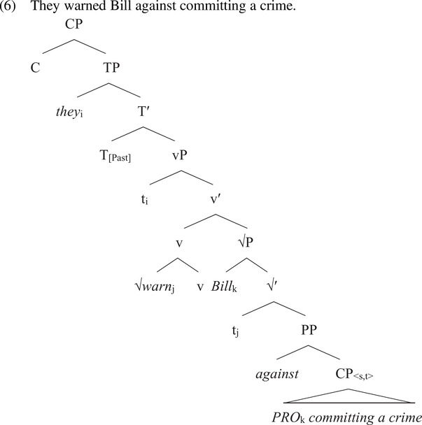

|  |
Целью проекта является построение функциональной типологии конструкций контроля и подъема. Конструкции данного класса связаны с перестройкой полипредикатного комплекса, где главная и зависимая клаузы связаны через невыраженный синтаксический аргумент. Разработанная М. Полинской параметризация конструкций с выделением четырех типов (стандартный vs обратный контроль, стандартный vs обратный подъем) опирается на допущения о свойствах контролера и мишени, которые не могут быть проверены эмпирически. Новизна предлагаемого подхода заключается в комплексном применении методов параметрической типологии для оценки формальных моделей языка. Мы предпринимаем типологическое исследование контроля и подъема на выборке из 22 языков Российской Федерации и Европы и проверяем две гипотезы: 1) Гипотеза А: противопоставление контроля и подъема носит универсальный характер и определяется семантикой предикатов, вводящих сентенциальные актанты; 2) Гипотеза Б: реализация контроля и подъема зависит от доступности механизмов падежного маркирования и согласования. Для проверки гипотезы А мы строим шкалы семантической контролируемости ситуации и вовлеченности (affectedness) субъекта зависимой предикации в ситуацию главной клаузы. Для проверки гипотезы Б мы исследуем языки с разным морфосинтаксисом — как падежные, так и беспадежные, как ролевые, так и непрозрачные в ролевом отношении, как агглютинативные, так и инкорпорирующие — и изучаем контроль и подъем в контексте явлений, подтверждающих проницаемость зависимой клаузы как для морфосинтаксических, так и для логико-семантических операций, в том числе — т.н. прозрачное согласование через границу клаузы и индексальный сдвиг. Отдельной задачей, необходимой для проверки как гипотезы А, так и гипотезы Б, является уточнение аргументной структуры предикатов, вводящих сентенциальные актанты в исследуемых языках. Поставленную в настоящем проекте задачу определить отвлеченные от конкретного языка закономерности выбора конструкций контроля и подъема при современном состоянии исследований уместно решать на основе относительно небольшой выборки языков мира в формате, предполагающим углубленное описание грамматики и грамматической семантики языков разных типов. В ходе работы по проекту планируется изучение синтаксического контроля и подъема аргумента и смежных явлений в тюркских, тунгусо-маньчжурских, финно-угорских, абхазо-адыгских, даргинских, иранских, славянских и германских языках. Выбор языков, представляющих данные группы и языковые семьи, мотивирован тем, что они демонстрируют широкое разнообразие морфосинтаксических типов на территории Евразии — от западной границы германского ареала (островные скандинавские языки) до Дальнего Востока (нанайский и ульчский языки). Актуальность проекта обусловлена тем, что большинство исследуемых языков недостаточно описаны в плане синтаксиса, а некоторые находятся в угрожаемом положении. По итогам выполнения проекта будет представлено не менее 30 публикаций в ведущих рецензируемых российских и зарубежных изданиях, в том числе — не менее 14 публикаций в изданиях Scopus и Web of Science, и 3 компьютерных базы данных: 1) база данных по конструкциям контроля и подъема в языках Евразии; 2) база данных по кодированию посессора и неагентивных аргументов; 3) база данных адвербиалов. Также к концу трехлетнего периода будет представлена рукопись коллективной монографии «Контроль и подъем в языках Евразии» объемом не менее 25 а. л. |
Государственный институт русского языка им. А. С. Пушкина
Грант РНФ № 25-18-00222